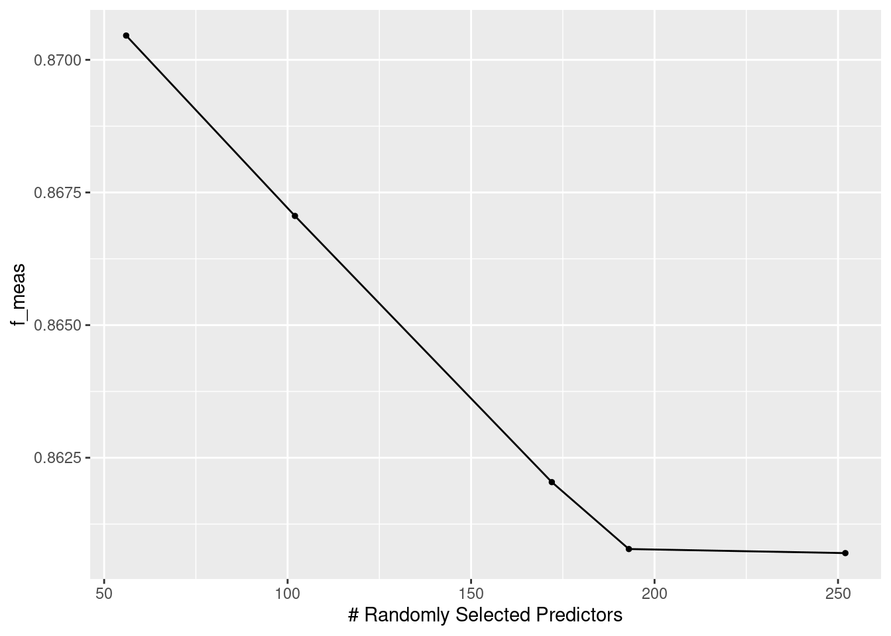
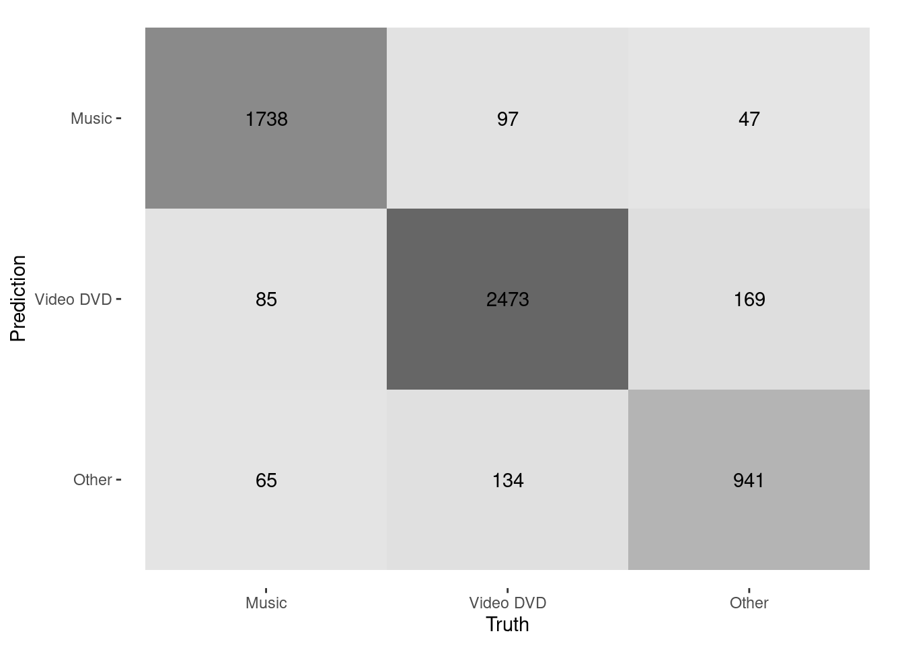
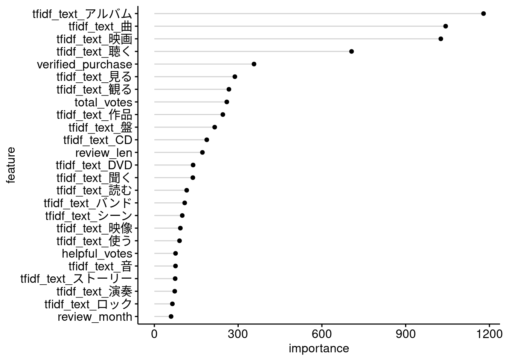

Chapter 4 Modeling
4.1 ワークフローの作成
ランダムフォレストのモデルを作成します。はじめに、モデルの学習に使うデータセットを分割します。
corp_split <- initial_split(dplyr::select(corp, !doc_id), strata = product_category)
corp_train <- training(corp_split)
corp_test <- testing(corp_split)ワークフローを作成します。
先ほど形態素解析の結果について確認したとき、「映画」という語がコーパス全体の75%で1万回出ないくらいでしたが、これは特徴量として拾ってほしいので、textrecipes::step_tokenfilterのmax_timesは1e4とします。
また、コーパス全体の75%で語彙数が2000まではいかないくらいだったので、max_tokensはとりあえず300にしておきます。
ranger_spec <-
parsnip::rand_forest(
mtry = tune::tune(),
trees = tune::tune()
) |>
parsnip::set_engine(
"ranger",
importance = "impurity",
num.threads = max(1, parallel::detectCores() - 1, na.rm = TRUE)
) |>
parsnip::set_mode("classification")
tfidf_rec <-
recipes::recipe(product_category ~ ., data = corp_train) |>
recipes::step_YeoJohnson(all_numeric_predictors()) |>
themis::step_downsample(product_category, under_ratio = 2) |>
textrecipes::step_tokenize(text, custom_token = \(x) { strsplit(x, " ", fixed = TRUE) }) |>
textrecipes::step_tokenfilter(text, min_times = 100, max_times = 1e4, max_tokens = 300) |>
textrecipes::step_tfidf(text, sublinear_tf = TRUE)
corp_wflow <-
workflows::workflow() |>
workflows::add_model(ranger_spec) |>
workflows::add_recipe(tfidf_rec)4.2 ハイパーパラメータの探索
treesとmtryについて、3分割CVで探索します。
ranger_tfidf_grid <-
corp_wflow |>
tune::tune_grid(
resamples = rsample::vfold_cv(corp_train, strata = product_category, v = 3L),
grid = dials::grid_latin_hypercube(
list(
dials::trees(range = c(100, 400)),
dials::finalize(
dials::mtry(),
tfidf_rec |> prep() |> bake(new_data = NULL) |> dplyr::select(!product_category)
)) |>
dials::parameters(),
size = 5L
),
metrics = yardstick::metric_set(yardstick::f_meas),
control = tune::control_grid(save_pred = TRUE)
)autoplot(ranger_tfidf_grid)
4.3 モデルの評価
last_fitして、F値を確認します。
corp_wflow_best <-
finalize_workflow(corp_wflow, select_best(ranger_tfidf_grid))
corp_last_fit <-
last_fit(corp_wflow_best, corp_split, metrics = metric_set(f_meas))collect_metrics(corp_last_fit)## # A tibble: 1 × 4
## .metric .estimator .estimate .config
## <chr> <chr> <dbl> <chr>
## 1 f_meas macro 0.884 Preprocessor1_Model1混同行列を見ると、OtherをVideo DVDと誤分類している例がやや多いように見えます。
collect_predictions(corp_last_fit) |>
conf_mat(product_category, .pred_class) |>
autoplot(type = "heatmap")

Figure 4.1: Confusion matrix
変数重要度がとくに大きい特徴量を見てみると、Video DVDやMusicと同定するのに効いていそうな語彙が並んでいることがわかります。
corp_last_fit |>
extract_fit_parsnip() |>
(\(x){ x$fit$variable.importance })() |>
tibble::enframe() |>
dplyr::slice_max(value, n = 25) |>
ggpubr::ggdotchart(x = "name", y = "value",
rotate = TRUE, sorting = "descending", add = "segment",
xlab = "feature", ylab = "importance")

Figure 4.2: Variable importance
OtherでVideo DVDと誤分類されている商品レビューは、どのようなレビューなのでしょうか。
サンプリングする前の元のデータセットから先頭2000行を取ってきて、学習したモデルでカテゴリを予測させてみて、同様に誤分類されたケースを確認してみます。
predict(extract_fit_parsnip(corp_last_fit),
extract_preprocessor(corp_last_fit) |>
prep() |>
bake(new_data = dplyr::slice_head(corp, n = 2000) |> dplyr::select(!doc_id))) |>
dplyr::bind_cols(
dplyr::slice_head(corp, n = 2000) |> dplyr::select(doc_id, product_category, text)) |>
dplyr::filter(product_category == "Other" & .pred_class == "Video DVD") |>
dplyr::inner_join(
dtplyr::lazy_dt(dt) |>
dplyr::select(review_id, product_category) |>
dplyr::rename(truth_category = product_category) |>
dplyr::as_tibble(),
by = c("doc_id" = "review_id")
) |>
dplyr::mutate(text = stringr::str_sub(text, end = 30)) |>
reactable::reactable(filterable = TRUE, compact = TRUE)BooksやVideoというカテゴリの商品が多いようです。